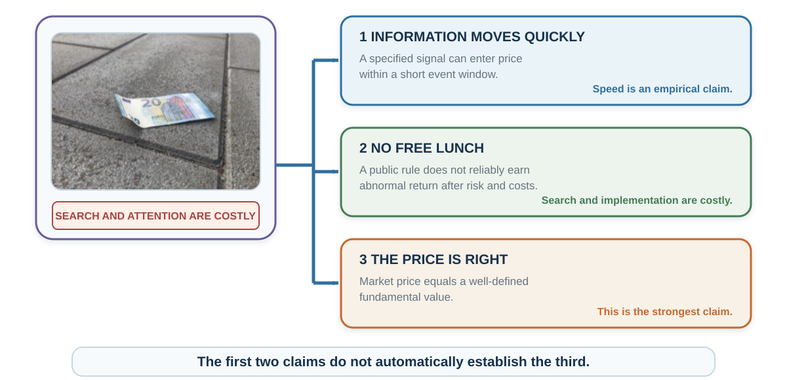

27 Prices as Social Signals
How markets aggregate beliefs—and amplify them into bubbles
“A market in which prices always ‘fully reflect’ available information is called ‘efficient.’”
— Eugene F. Fama, “Efficient Capital Markets”, 1970, p. 383
Opening puzzle: earnings beat expectations
A listed company reports earnings above the analyst consensus before the market opens. Should you buy immediately, wait, or do nothing?
“Good news means buy” is not yet an investment thesis. The question is not whether earnings were good in isolation. It is whether the announcement was better than the expectations already embedded in the price, whether your order can be executed before prices adjust, and whether the apparent return survives risk and costs.
There is a second question that is easy to miss. If the price jumps as you decide, that jump itself can feel like confirmation—other people seem to agree. But a rising price may reflect many traders responding to the same headline, copying one another, or buying in hope of reselling to someone else. What looks like independent evidence may be a social signal.
Imagine that you place an order five minutes after reading the announcement. The company may indeed have exceeded expectations, yet your purchase succeeds only if the price you pay still leaves an attractive return for the risk. Before deciding, record when you learned the news, what reaction you expect from that point onward, what the price move itself is telling you, and what costs your order would incur. We will return to that record after examining how markets learn—and how they can amplify shared beliefs.
Learning goals
- Distinguish rapid information incorporation, no free lunch, fundamental-value accuracy, and bubble dynamics.
- Evaluate one event study, one limits-to-arbitrage case, one laboratory market, and one field episode without collapsing their evidence.
- Produce a falsifiable market memo and a two-direction bubble dashboard with a robust action.
Why study behavior in financial markets?
Financial markets put behavioral explanations through a demanding test: stakes are high, professionals participate, and mistakes create opportunities for others. Yet a biased investor does not imply a biased market, because other traders may offset the error.
Behavioral finance studies how beliefs, attention, preferences, and constraints affect investors and prices (Barberis & Thaler, 2003). It needs a benchmark to identify a departure, and a market mechanism to explain why the departure survives competition.
The €20 note and three meanings of efficiency
The familiar joke says that a financial economist would not pick up a €20 note because, in an efficient market, someone would already have taken it. But information is not free. People search precisely because a reward may remain.
The efficient market hypothesis concerns the incorporation of a specified information set into prices, conditional on a model of expected returns (Fama, 1970, 1991):
- Weak form: the information set includes historical prices and returns.
- Semi-strong form: it includes publicly available information.
- Strong form: it includes all information, even private information—a much stronger benchmark.
Three claims are easily confused:
- Information is incorporated quickly. Price responds to a specified signal.
- No free lunch. A public rule does not reliably earn abnormal return after appropriate risk and realistic costs.
- The price is right. Market price equals a well-defined fundamental value.
The first two do not automatically establish the third. A price can be difficult to beat and still differ from a later estimate of fundamental value. Conversely, a price can be noisy without offering a low-risk implementable profit.

Grossman and Stiglitz (1980) expose the paradox. If prices revealed all costly information perfectly, nobody would pay to collect information; if nobody collected it, prices could not reveal it. Informational efficiency is better understood as an equilibrium in which information acquisition is costly and informed trading is rewarded enough to occur—not as costless omniscience.
Fast price discovery is possible
If public news changes a price before an investor can trade, recognizing the news correctly may still come too late to earn a return. The useful question is how quickly the adjustment occurs relative to an executable order. The US Federal Reserve’s policy statement establishes its release at 14:00 on September 18, 2013. To measure how quickly the market responded, an event study must pair that timestamp with price and volume data.
Price discovery can also aggregate dispersed clues. The space shuttle Challenger exploded at 11:39 a.m. on January 28, 1986; the news appeared on a major financial wire minutes later. Four publicly traded contractors were connected to the launch. By the end of the trading response, Morton Thiokol experienced the distinctive loss. A presidential commission identified the failure of booster O-ring seals made by Thiokol months later. Maloney and Mulherin (2003) found no simple news story or obvious insider-trading trail that fully explained the early discrimination. The market appeared to combine dispersed information, inference, and trading.
Collective trading can reveal information no single public announcement states.
The wisdom of a market depends on conditions also familiar from crowd judgment: dispersed information, some independence, incentives to reveal beliefs, and an aggregation mechanism. If participants copy the same signal or face the same constraint, the crowd can amplify error instead.
Every efficiency test is a joint test
To label a return abnormal, we must first say what return was expected. Suppose an asset earns 12%. That is not evidence of mispricing until we specify its risk, exposures, time period, benchmark, and costs.
Fama (1991) emphasizes the joint-hypothesis problem: a test evaluates market efficiency together with an asset-pricing model. A rejection may reflect inefficient prices or an inadequate expected-return model. Unrealistic execution, omitted costs, or selection of the sample and statistic can further undermine an apparent trading opportunity.

An event study measures returns around a defined event against a stated expected-return model. The optional research track shows how to audit its timing, comparison, and uncertainty, using earnings announcements as an example.
Limits to arbitrage: seeing an error is not enough
A strict arbitrage locks in a gain without a possible loss under the stated assumptions. Many trades described as arbitrage instead bet on two prices eventually moving into a more defensible relation. That correction can take time and expose the trader to losses. Shleifer and Vishny (1997) show why informed traders may be unable or unwilling to make it happen:
- Fundamental risk: the asset’s underlying value can worsen before convergence.
- Noise-trader risk: mispricing can become larger before it becomes smaller.
- Horizon risk: clients or managers may withdraw capital after interim losses.
- Short-sale constraints: borrowing can be unavailable, recalled, or expensive.
- Model risk: the apparent mispricing may be the analyst’s error.
- Transaction and funding costs: spreads, market impact, leverage, and margin calls can dominate.
Professional incentives can shorten the horizon precisely when a long-horizon correction is expected. An arbitrageur can be right eventually and insolvent first. Behavioral market outcomes therefore require both a source of biased demand and a reason better-informed capital does not fully offset it.
The Palm–3Com case: visible inconsistency, costly correction
On March 2, 2000, 3Com sold about 5% of its Palm subsidiary and announced an intention—subject to conditions—to distribute the remaining Palm shares to 3Com shareholders at roughly 1.5 Palm shares per 3Com share. Ignoring timing, taxes, and frictions, the relative-value relation was:
\[ P(3Com) \approx 1.5P(Palm) + \text{value of 3Com's other businesses}. \]
After Palm’s first trading day, observed prices implied that the residual 3Com businesses were worth about negative $22 billion in Lamont and Thaler’s (2003) calculation. Simple addition makes that hard to defend. Yet Palm shares were scarce to borrow, shorting was costly and risky, and the distribution was delayed and conditional. The case is unusually strong evidence of relative-value mispricing—and equally strong evidence that a visible inconsistency need not create a riskless free lunch.
A bubble is a reinforcing-process hypothesis
Fundamental value is not printed beside the price. It depends on uncertain cash flows, risk, discounting, and a terminal value. Let \(D_t\) denote the discount factor appropriate to a cash flow at horizon \(t\), and let \(P_T\) be the ex-dividend terminal price. A deliberately simplified discounted-cash-flow model can discipline the debate:
\[ V_0=\sum_{t=1}^{T}D_tE(CF_t)+D_TE(P_T). \]
Here \(D_t\) must incorporate the timing and risk relevant to that claim. Equivalently, one can discount risk-adjusted certainty-equivalent cash flows at risk-free rates. Discounting risky expected cash flows at a risk-free rate without a risk adjustment can misstate value; it overstates value when the claim requires a positive risk premium. Before calling a price irrational, state the growth, margin, risk-adjustment, discount-rate, and terminal assumptions that would make it reasonable. A bubble diagnosis becomes more plausible when recent gains increase expectations of further gains, attract attention and financing, induce demand or strategic resale, and thereby validate the forecast temporarily (Shiller, 2000; Greenwood & Shleifer, 2014).

A boom can begin with genuine innovation and later acquire a feedback component, which credit can amplify.
Strategic resale and synchronization risk
A buyer can believe that a price exceeds their own estimate of fundamental value and still purchase because they expect to resell to someone else at a higher price. The payoff then depends not only on cash flows but on beliefs about later buyers’ beliefs and on exiting before the correction. This makes a bubble partly a problem of strategic interdependence.
Skeptical traders face the mirror problem. Even when many privately judge the price fragile, each may be uncertain about when the others will act. Selling or shorting too early can be costly, and funding or career pressure can force an informed trader out before convergence. Abreu and Brunnermeier (2003) formalize how this synchronization risk can delay correction. Shared doubt is not the same as coordinated correction.
One field episode: dot-com innovation and extreme expectations
From the January 3, 1995 close of 743.58 to the March 10, 2000 peak close of 5,048.62, the NASDAQ Composite rose about 579%. By October 9, 2002, it closed at 1,114.11—a 77.9% decline from the peak (Federal Reserve Bank of St. Louis, 2026). Young internet firms faced genuine innovation, profound valuation uncertainty, restricted share supply, disagreement, and optimistic growth narratives (Ofek & Richardson, 2003).
Contemporaneous belief that valuations were high did not force exit: resale expectations, fear of missing out, institutional career pressure, and uncertainty about timing could sustain participation. The episode is useful because the fundamental and feedback stories coexist.
One laboratory market: a known risk-neutral benchmark can still be exceeded
Field data rarely reveal fundamental value with certainty. Laboratory markets can define the dividend distribution, asset life, information, cash, short-selling rules, and trading institution. In the classic Smith, Suchanek, and Williams design, a finite-lived asset paid a dividend after each period. If expected dividend is \(d\) and \(k\) periods remain, the risk-neutral expected-dividend benchmark, with no final redemption and negligible discounting over the short experimental session, is \(FV_t=kd\). Prices in many baseline markets nevertheless rose above the benchmark and later fell (Smith et al., 1988; Porter & Smith, 2003).
The experiment shows that ambiguous fundamentals are not necessary for bubble-like paths. Repeated experience often reduces bubbles in the same design, while changed environments can rekindle them (Dufwenberg et al., 2005; Hussam et al., 2008).
Different strategies can sustain the same path. Passive trading can remain broadly consistent with fundamental value; feedback trading can follow price changes; a speculator may buy above a current value estimate when expecting a still higher next price. Haruvy and Noussair’s (2006) rule classified behavior only when a trader’s highest consistency score reached at least 8 of 15 periods; ties received fractional weights. Across 18 sessions with nine inexperienced participants each, the 162 trader classifications were:

The evidence supports interaction among heterogeneous trading strategies.
A two-direction bubble dashboard
A rising price can reflect improving prospects, a reinforcing trading process, or both. Treating every rise as confirmation of a bubble would make the diagnosis impossible to correct; dismissing every concern as innovation could leave growing exposure unchecked. Record what makes the price look fragile, what could justify it, and which observation would change your assessment. A probability can help when the event and horizon are well defined.
| Domain | Evidence that raises concern | Evidence that lowers concern |
|---|---|---|
| Fundamentals | Price requires extreme growth or implausibly low discount rates | Verifiable cash flows, productivity, scarcity, or lower required returns support the move |
| Expectations and trading | Forecasts extrapolate gains; turnover, attention, entry, and resale talk surge | Expectations remain dispersed and cash-flow theses remain testable |
| Leverage and liquidity | Credit, collateral loops, maturity mismatch, or one-sided liquidity expand | Financing is conservative, losses absorbable, and supply responsive |
| Arbitrage constraints | Shorting is costly; skeptical capital is horizon-constrained | Close substitutes and durable corrective capital exist |
Write both the fundamental story that would justify the price and the feedback story that would make it fragile. For each, name a discriminating observation. Even a high bubble probability does not reveal timing. Robust responses—limiting leverage and position size, stress-testing funding, preserving liquidity, and precommitting review conditions—may dominate a confident directional bet.
Investor behavior: the decision process matters
Return to the earnings announcement. A vivid company story can attract attention, while a subsequent price rise appears to confirm that other investors share your information. If those investors are responding to the same announcement or copying the price, their behavior supplies less independent evidence than it seems.
After buying, the problem changes. You may search for reasons to defend the position, treat its purchase price as the point to recover, or evaluate every fluctuation in isolation. The chapters on defended beliefs, mental accounts, and reference points explain these possibilities. In a market, their consequences also depend on other traders, the size of the position, and the cost of changing it.
Barber and Odean (2000) found that, from February 1991 through January 1997, the most active fifth of brokerage households earned an annualized net return of 11.4%, compared with 18.5% for the least active fifth. The result is consistent with overconfidence plus trading costs.
Preserve the pre-purchase record to apply the process–outcome distinction. A later gain should test the recorded thesis rather than erase weaknesses in the reasoning that produced it.
A falsifiable investment memo
An investment story can adapt easily to the next price move: a rise appears to vindicate it, while a fall becomes an opportunity to buy more. Then no outcome teaches the investor when the reasoning has failed. Before buying, turn the story into a record that specifies what must happen, what would count against it, and what action follows. Write one page:
- Decision and noninvestment option. What exactly will be done, in what size, and why is doing nothing inferior?
- Thesis. State the causal claim in one sentence.
- Embedded expectations. What does the current price already require the firm or market to achieve?
- Base rate and comparison class. What happened in similar situations?
- Drivers. Name the two or three variables that must move.
- Disconfirmation. What observation would make the thesis materially less plausible?
- Risks and dependence. Which exposures could fail together?
- Implementation. Include spreads, liquidity, taxes, financing, capacity, and time horizon.
- Position and exit rules. Precommit a maximum exposure, review date, and conditions for reducing, adding, or closing.
- Evaluation. Separate frequent risk monitoring from the horizon on which performance will be judged.
Then red-team the memo. Look for an unfalsifiable escape (“the market will recognize it eventually”), a sunk argument (“we have already lost too much to sell”), a missing denominator, a selected backtest, or a position too large for the uncertainty.
Practice Lab
Choose a published event study discussed in this chapter or a course-provided case containing the event time, benchmark, reported abnormal return, uncertainty, and potential confounds. Produce a one-page audit that records: first public time, expected-return model, estimation and event windows, main estimate with uncertainty, overlapping news, tradable timing, and costs. End with two sentences: the strongest warranted conclusion and one stronger claim the evidence does not support. Do not invent missing data or results.
Advanced extension: reproduce the estimate only when the dataset, data definitions, and analysis code or a specified software template are provided. Compare your result with the published estimate and document every discrepancy before interpreting it.
Take it forward
The earnings announcement now poses a sharper question: what would have to be missing from the current price for buying at your available execution price to make sense? If the evidence does not answer it, a favorable headline alone cannot complete the argument. Keep the original record; later returns can then test a prediction instead of supplying a convenient explanation.
Prices can coordinate dispersed action without a single commander. Organizations also coordinate through leaders, roles, meetings, and assigned responsibilities. The next chapter asks when these concentrated social signals improve coordination and when they suppress evidence, dissent, ownership, or action.
Optional research notes
References cited in this chapter
Barber, B. M., & Odean, T. (2000). Trading is hazardous to your wealth: The common stock investment performance of individual investors. Journal of Finance, 55(2), 773–806.
Barberis, N., & Thaler, R. (2003). A survey of behavioral finance. In G. M. Constantinides, M. Harris, & R. Stulz (Eds.), Handbook of the economics of finance (Vol. 1B, pp. 1053–1128). Elsevier.
Banz, R. W. (1981). The relationship between return and market value of common stocks. Journal of Financial Economics, 9(1), 3–18.
Abreu, D., & Brunnermeier, M. K. (2003). Bubbles and crashes. Econometrica, 71(1), 173–204.
Brunnermeier, M. K., & Oehmke, M. (2013). Bubbles, financial crises, and systemic risk. In G. M. Constantinides, M. Harris, & R. Stulz (Eds.), Handbook of the economics of finance (Vol. 2B, pp. 1221–1288). Elsevier.
Caginalp, G., Porter, D. P., & Smith, V. L. (1998). Initial cash/asset ratio and asset prices: An experimental study. Proceedings of the National Academy of Sciences, 95(2), 756–761.
De Bondt, W. F. M., & Thaler, R. (1985). Does the stock market overreact? Journal of Finance, 40(3), 793–805.
Fama, E. F. (1970). Efficient capital markets: A review of theory and empirical work. Journal of Finance, 25(2), 383–417.
Fama, E. F. (1991). Efficient capital markets: II. Journal of Finance, 46(5), 1575–1617.
Fama, E. F., & French, K. R. (1992). The cross-section of expected stock returns. Journal of Finance, 47(2), 427–465.
Fama, E. F., & French, K. R. (1998). Value versus growth: The international evidence. Journal of Finance, 53(6), 1975–1999.
Federal Reserve Bank of St. Louis. (2026). NASDAQ Composite [NASDAQCOM]. FRED. Retrieved August 29, 2026, from https://fred.stlouisfed.org/series/NASDAQCOM
Grossman, S. J., & Stiglitz, J. E. (1980). On the impossibility of informationally efficient markets. American Economic Review, 70(3), 393–408.
Harvey, C. R., Liu, Y., & Zhu, H. (2016). … and the cross-section of expected returns. Review of Financial Studies, 29(1), 5–68.
Jegadeesh, N., & Titman, S. (1993). Returns to buying winners and selling losers: Implications for stock market efficiency. Journal of Finance, 48(1), 65–91.
MacKinlay, A. C. (1997). Event studies in economics and finance. Journal of Economic Literature, 35(1), 13–39.
Maloney, M. T., & Mulherin, J. H. (2003). The complexity of price discovery in an efficient market: The stock market reaction to the Challenger crash. Journal of Corporate Finance, 9(4), 453–479.
McLean, R. D., & Pontiff, J. (2016). Does academic research destroy stock return predictability? Journal of Finance, 71(1), 5–32.
Rendleman, R. J., Jr., Jones, C. P., & Latané, H. A. (1982). Empirical anomalies based on unexpected earnings and the importance of risk adjustments. Journal of Financial Economics, 10(3), 269–287.
Shleifer, A., & Vishny, R. W. (1997). The limits of arbitrage. Journal of Finance, 52(1), 35–55.
Dufwenberg, M., Lindqvist, T., & Moore, E. (2005). Bubbles and experience: An experiment. American Economic Review, 95(5), 1731–1737.
Greenwood, R., & Shleifer, A. (2014). Expectations of returns and expected returns. Review of Financial Studies, 27(3), 714–746.
Haruvy, E., Lahav, Y., & Noussair, C. N. (2007). Traders’ expectations in asset markets: Experimental evidence. American Economic Review, 97(5), 1901–1920.
Haruvy, E., & Noussair, C. N. (2006). The effect of short selling on bubbles and crashes in experimental spot asset markets. Journal of Finance, 61(3), 1119–1157.
Hussam, R. N., Porter, D., & Smith, V. L. (2008). Thar she blows: Can bubbles be rekindled with experienced subjects? American Economic Review, 98(3), 924–937.
Holt, C. A., Porzio, M., & Song, M. Y. (2017). Price bubbles, gender, and expectations in experimental asset markets. European Economic Review, 100, 72–94.
Lamont, O. A., & Thaler, R. H. (2003). Can the market add and subtract? Mispricing in tech stock carve-outs. Journal of Political Economy, 111(2), 227–268.
Ofek, E., & Richardson, M. (2003). DotCom mania: The rise and fall of internet stock prices. Journal of Finance, 58(3), 1113–1137.
Porter, D. P., & Smith, V. L. (2003). Stock market bubbles in the laboratory. Journal of Behavioral Finance, 4(1), 7–20.
Shiller, R. J. (2000). Irrational exuberance. Princeton University Press.
Smith, V. L., Suchanek, G. L., & Williams, A. W. (1988). Bubbles, crashes, and endogenous expectations in experimental spot asset markets. Econometrica, 56(5), 1119–1151.
Applying a laboratory estimate to a field market requires comparing participants, stakes, institutions, leverage, information, and asset supply.↩︎